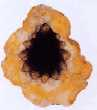
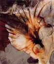

|
Jacksonville Museum of Modern Art
Neobotanica |
|||
|

Epizo III, 2000 Oil on parchment, 76 x 26 in. |
The rough edges, textures and encrusted surfaces of David Geiser's works bring to mind the unearthing of geological material. In Epizo III, the shield-like surface is created by laminating successive strata of torn parchment to form a durable, grainy support. Geiser's linear forms are not merely illuatrations of botanicals, but rather organic forms filtered through the artist's intellect, forms that, according to Geiser, reference the Fibonacci sequence and the mathematics underlying all of nature. | ||
|
In Spiny Fan V, Geiser combines earth tones to form luminous
passages with shards of mossy green. Areas rich with oil media
contrast with areas consisting of chalky raw pigment. The central
gestural form resembles a fossilized frond - a warm afterimage burned
into the surface of the painting.
The four artists of NEOBOTANICA share a kinship with earlier artists who, centuries ago, marveled at the same inherent beauty, mystery, and distinctiveness of our organic world. The botanical as a subject provides a myriad of possibilities for creative scrutiny. Yet while each artist's approach to materials, paint application and surface are highly individual, all incorporate, in varying degrees, the vocabulary and proceses of modernist abstraction. |

Spiny Fan V, 2001 Oil on board, 24 x 20 in. |
||
|
|
|||
{kind=link}
{kind=link}